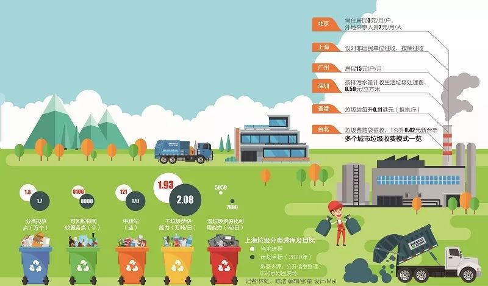
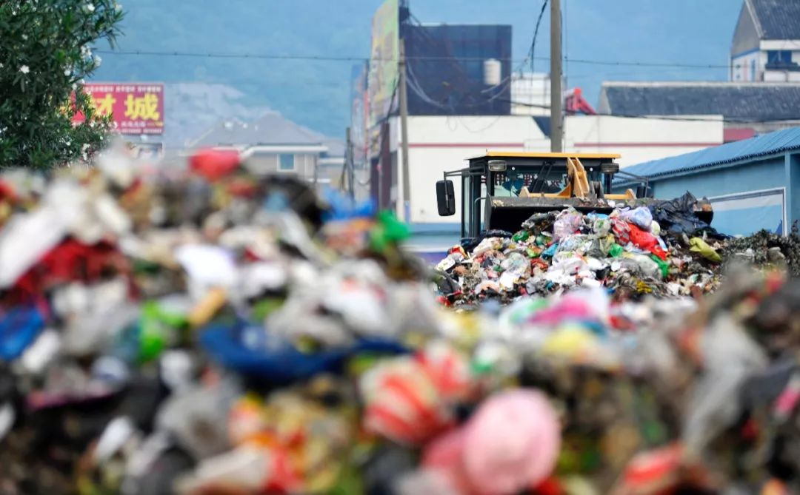

冲破“垃圾围城”19年：垃圾分类如何改变一座城、一个人
来源：北京东城
冲破“垃圾围城”
在垃圾处理政策停顿了十年之后，一场 “垃圾强制分类”大战正在上海火速拉开。微观的个人、产业， 甚至是一座城市，在垃圾分类的进程中，都被卷入这一从无序到有序、从混乱到正规的时代变迁。这场垃圾战争，垃圾分类只是一个起步，为的是冲出 “垃圾围城”。
图片来源 / 21世纪以经济报道（jjbd21）
7月1日一大早，上海的梅雨季就开始发威，一阵滂沱大雨后，陈军（化名）在约定的地方停下了车。
这是21世纪经济报道记者在短短一个月内第三次见到他，这次他黑瘦的脸上又多了些愁容。当天是号称“史上最严”的《上海市生活垃圾分类管理条例》（以下简称《条例》）正式实施的首日，但在陈军身上并没有看出另外其他的异样工作准备。
在上海某远郊区，陈军算得上生活垃圾处理行业中的“元老”。从18岁开始到沪打工到如今近不惑，早已习惯并熟稔垃圾清运与处理工作的他，最近也时不时地通过微信告知亲友可能即将失业的焦虑。
在陈军看来，7月1日正式实施的《条例》将加速上海全程垃圾分类体系的建设，这意味着原有的垃圾分类处理体系将被加速重新调整，同时也预示着过去类似陈军所熟悉并赖以生存的既有处理体系空间将“土崩瓦解”。
对于个人，以及既有的旧垃圾处理体系而言，都意味着即将面临的一轮巨大波动。因此，这场垃圾分类的革命调整得越急迫，陈军们的焦虑感也越强烈。
9年前，导演王久良以一部《垃圾围城》的纪录片展示了北京城被周围大大小小的垃圾场包围，它们组成了北京的“七环”。在垃圾处理政策停顿了十年之后，上海选择以“强硬”的姿态重启垃圾处理进程。
某种程度上而言，陈军近20年的垃圾处理从业经历几乎能够成为上海垃圾分类的一块棱镜，其发展调整、行业升级往往意味着一群人、一个产业甚至是一个城市，在垃圾分类的进程中，从无序到有序、从混乱到正规的时代微变迁。
19年垃圾清运变迁
图片来源 / 图虫（资料图）
2000年夏天，刚刚高中毕业的陈军跟随父母来到上海投奔远郊的亲戚，无学历无手艺，只能跟随亲戚干起了“拉垃圾”的工作，这一干就是近20年。
起初，他将这份工作视为一种“耻辱”，尤其是夏天每次垃圾车停靠在恶臭的垃圾堆放站后，从旁边走过去的行人捏紧鼻孔，嘴里的碎语让陈军倍感气愤。尽管工资不低，但对于年轻时的他而言，这并不算是一份体面的工作。
不过很快，陈军的生活便迎来变化。2000年，上海被国家列为首批生活垃圾分类试点城市，垃圾分类运装与处理成为主旋律；同时上海远郊多个工业园区兴建，工业垃圾处理量也日益攀升。
面对日益增多的郊区市场需求，和并不严格的管理监督现状，陈军的垃圾清运工作开始逐渐向工业垃圾处理延伸。他告诉记者，当时上海的生活垃圾处理与工业垃圾处理并没有构建出严密的处理体系，在绝大多数采用填埋为主的情况下，垃圾混装填埋成为一种常态。
“那个时候，上海很多远郊的海边都是芦苇荡，混装的垃圾运到那里后经过推车推平后就地掩埋了。”陈军向记者回忆称，这种处理方式在当时成为一种普遍现象，也给垃圾处理带来了一定的利润空间。
在采访中，21世纪经济报道记者了解到，彼时工业垃圾的处理和生活垃圾的处理价格差距较大，由于工业垃圾处理很多是工厂直接出钱，在当时市场并未规范的条件下，与生活垃圾混倒一起填埋，成为行业内的“潜规则”。
这一“灰色”的混乱契机，让陈军有机会以处理垃圾为名，通过分拣工业垃圾中的可回收物，以及填埋处理挣了些钱，但如此好景定然不会长久。
2006年，上海为推进垃圾分类运输处理，对陈军所在环保公司的运输车辆进行了专业化配置，在诸多流程上进行规范，这也使得垃圾混装填埋处理在末端有严格的管控监督，垃圾混倒乱倒成为历史。
“那个时候很多垃圾处理的渠道开始构建，但总体还是以填埋处理为主。”陈军告诉记者，上海绝大多数的城市垃圾都被运输至南汇的芦潮港进行填埋。不过，虽然末端处理的体系已管控，但前端的分类管控则并不严格，这让陈军慢慢也摸到了“垃圾生意”的门道。
他向记者回忆称，彼时很多生活垃圾中都掺杂着诸多可回收物，往往通过自己的辛苦分拣，能将值钱的垃圾分出来卖钱，再将无用的垃圾装回车里运去填埋，也能够产生不少可观的利润空间。
那个时候，没有人愿意做这个又臭又脏的活，所以我们挣的也是辛苦钱。”陈军语重心长地说，出生中部农村家庭的他，慢慢适应这份能够让他付出就带来回报的工作。
在一天的跟访过程中，记者时不时地能够看到他粗壮有力的手指，在粗糙的表皮上很多划痕开裂十分显眼，他解释说，这些都是当时长期分拣垃圾造成的伤疤，但时间久了，他也不再感觉到疼痛。
分类革命
而后的10年间，上海垃圾处理渠道的基本面发生剧变。在此期间，陈军所在的环卫公司，通过在垃圾处理中间环节进行分拣，逐渐站稳了脚跟，他本人也在上海远郊结婚成家。
但很快这一格局被打破。2017年，国务院出台了《生活垃圾分类制度实施方案》，进一步明确了上海等46个城市要在2020年年底前，先行实施生活垃圾强制分类。同年，上海市人大常委会将《上海市生活垃圾管理条例》列为重点调研项目，2018年将该项目列为正式立法项目。
这成为上海垃圾分类的一个重要转折点，也成为陈军职业生涯进入一个转折期的开始。在此基础上，上海开始推进垃圾焚烧业务，有关垃圾末端焚烧处理的举措不断出台，并迅速取代实行多年的垃圾填埋方式。
也在这时，陈军及其从业者开始受到更加严苛的制度管控，每一车运输的垃圾都建立起了网络实时跟踪系统，这让陈军多年的中间分拣业务无处遁形。
与之相匹配的是，上海在推动垃圾末端处理方式改革的同时，也在同时推进前端的分类体系构建。
至2018年4月出台《上海市生活垃圾全程分类体系建设行动计划（2018-2020）》，规划至2020年上海生活垃圾源头分类减量要基本实现全覆盖，这一段时间内，上海针对垃圾处理相继修订了《上海市环境保护条例》，出台了《上海市再生资源回收管理办法》等多个政府规章。
这意味着，在干垃圾、湿垃圾、建筑垃圾、可回收垃圾的四个基本分类下，围绕不同的垃圾构建不同的处理细分管理办法，尤其是在可回收垃圾里涉及的固废垃圾处理方面，进行了严格管控。
这些对于陈军来说，就意味着以往所依赖的垃圾处理利润空间基本被锁死并规范了起来，这无异于又回到了起初打工时仅靠拿垃圾运输工资的时期。
在约访过程中，记者再次见到陈军时，他似乎比之前的见面更加焦虑，谈话间隙也多了几次叹息。
角色转变
7月1日正式实施的《条例》让陈军所在的垃圾公司也发生了重要的角色变迁，从以往的干湿垃圾运输企业定性为干垃圾运输企业，直接将湿垃圾运输分拨了出去，同时公司也从地区垃圾项目承包商转变为垃圾清运供应商。
湿垃圾清运费剔除后，现在公司盈利直接少了一半，我们的命运也变得难以把握。”陈军在谈论这个问题时，难掩脸上的焦虑神色，他似乎完全未能意识到这场正在全市开展的垃圾分类革命对于生态环境改善的远大意义所在。
就在谈话的过程中，陈军接到了一个电话，领导告知他园区以后的干垃圾不再是按单位收费，而是园区物业所合作的专业垃圾处理公司，先统一收集分拣后，再让他们送往焚烧站进行处理。
挂完电话，陈军告诉记者，这种先分拣再处理的操作方式，意味着垃圾减量化开始实质性地推行了，由于清运公司的垃圾处理以桶计量，就导致公司清运业绩还将进一步下降。
越来越多的企业力量开始瞄准这块‘蛋糕’，说明我们可能真的到了要被淘汰的时候了。”陈军告诉记者，他想过有一天这种规范化的制度到来，但没有想到会越来越快，在越发规范化的制度体系构建下，传统意义上“肯吃苦、不嫌臭”的劳动付出，已经远不再成为从事这个行业的基础。
在采访的最后，陈军脸上的愁容也并未散去，但也留给记者一个思考：在愈发细致与规范的垃圾分类管理下，这些底层的工作者该如何进一步激发其积极性？
但类似陈军等老一代垃圾分类处理工作者没落的背后，也正意味着新一代垃圾分类处理工作人员的崛起。正如7月1日起，记者在上海多处看到此前所使用的旧分类垃圾桶被逐一替换成四色鲜明的垃圾桶一样，辞旧迎新总需要“一代新桶换旧桶”。
21君
小伙伴们，垃圾分类正在有序推进，上海之后，是全国另外的45个重点城市，之后再到所有的地级市，你准备好了么？